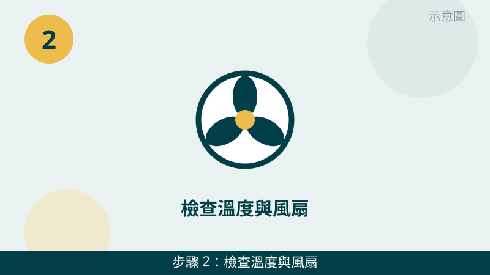
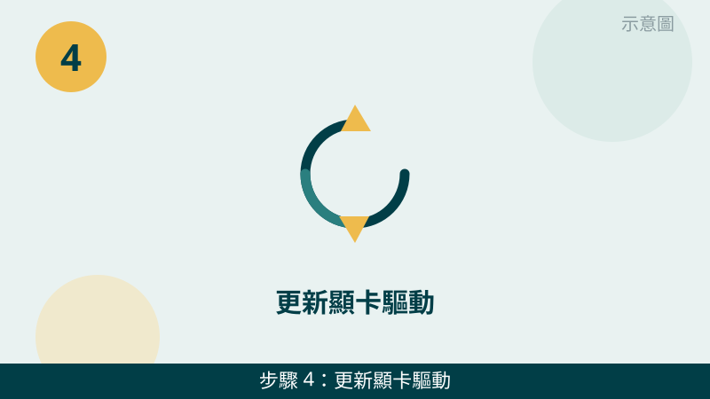
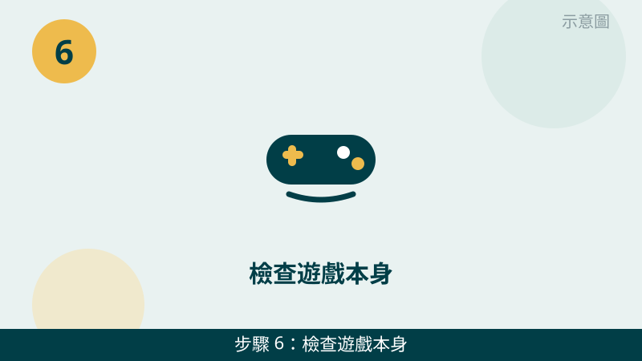

玩遊戲玩到一半突然閃退、畫面凍住、甚至整台自動關機，確實很掃興。但請先放心：當機的原因通常可以分成四種：過熱、驅動、記憶體或背景程式負荷、遊戲本身。先分清是哪一種，再對症測試，比一直重開遊戲有效得多。
開始之前先跟您說明一個判斷原則：「只有一款遊戲會當」和「玩哪款都會當」是兩種故事。只有一款會當，比較像是那款遊戲本身或設定問題；玩哪款都會當，比較像是過熱、驅動或硬體負荷問題。您先記下當機時的樣子、玩了多久才當，檢查時會更有方向。
當機的畫面先傳給我們看
把錯誤訊息、當機時的畫質設定、風扇與溫度狀況拍下來傳 LINE，通常能先看出是過熱、驅動還是遊戲本身的問題。先免費評估、報價透明，確認後再預約維修。
台中電腦玩遊戲當機自救檢查清單（由簡到難）
- 1. 先分清當機的樣子：閃退、凍結、藍屏，還是整台自動關機。請先記下三件事：當機時是遊戲自己關掉、畫面凍住不動、出現藍屏，還是整台直接關機或重開；以及大概玩了多久才當。怎麼判斷：整台自動關機或重開，最優先懷疑過熱保護，請直接看第 2 步並先停用；只有遊戲閃退，比較先往驅動與遊戲本身查。
示意圖（非官方截圖） - 2. 檢查溫度與風扇：出風口有沒有被擋住、風扇聲是不是異常。請先確認出風口沒有被棉被、牆壁或桌面擋住，筆電盡量放在平坦通風的桌面上，玩遊戲時注意風扇是不是一直狂轉、機身是不是異常燙手。怎麼判斷：換到通風處、墊高一點後，玩同樣的遊戲能撐比較久才當，代表散熱確實是關鍵；如果還是很快就當，再往驅動與設定查。

示意圖（非官方截圖） - 3. 把遊戲內畫質調降一檔測試。請到遊戲設定裡，把解析度、特效、陰影先調降一檔，再玩同一段遊戲看看。怎麼判斷：調降後就不當機了，代表原本的畫質設定超過了電腦負荷，之後可以慢慢往上調回能穩定玩的等級；調降後還是照樣當機，代表問題不在畫質負荷，請往驅動與背景程式查。
示意圖（非官方截圖） - 4. 更新顯卡驅動，驅動太舊或有衝突也會當機。請透過顯卡品牌的官方驅動程式或 Windows Update 更新顯卡驅動，更新前先記下目前的驅動版本，更新完再玩同一款遊戲測試。怎麼判斷：更新驅動後就不當了，代表之前是驅動問題；更新後還是當，請看第 5 步是不是背景程式在搶資源。不確定顯卡型號或該裝哪個版本時，請先拍照問我們，不要下載來路不明的驅動。

示意圖（非官方截圖） - 5. 關掉背景程式再玩一次。請先關掉直播軟體、錄影軟體、瀏覽器多個分頁、雲端同步等背景程式，只留遊戲本身再測試。怎麼判斷：關掉背景程式後就不當了，代表是記憶體或 CPU 被背景程式吃光了；關掉後還是當，再看第 6 步是不是遊戲本身的問題。
示意圖（非官方截圖） - 6. 檢查遊戲本身：更新版本、驗證檔案、換一款遊戲測試。請先確認遊戲已更新到最新版本，再用遊戲平台內建的「驗證遊戲檔案完整性」功能檢查一次，最後換另一款遊戲玩看看。怎麼判斷：只有原本那款會當、換一款就不當，代表是遊戲本身的問題；換哪款都會當，代表比較像是過熱、驅動或硬體方向，請先拍照問我們，不要再硬撐繼續玩。

示意圖（非官方截圖）
別再自己試了
- 玩到一半自動關機或重開時，請先停用檢查散熱，不要硬撐繼續玩，以免過熱造成更嚴重的損壞
- 聞到燒焦味、機身燙到不能碰、電池有膨脹鼓起時，請立刻停用，不要再開機測試、不要自行拆卸或擠壓，請先拍照問我們
- 不要自己超頻、改電壓、或亂調 BIOS 設定，調錯會讓當機更頻繁、甚至開不了機
- 不要自己拆機清灰塵或換零件但不確定怎麼拆——請先拍照問我們，不要硬拆，拆壞排線或弄斷卡扣反而更貴
- 網路上教的「一鍵修復當機」「外掛加速」工具來路不明，不要隨便下載安裝，以免越修越糟
如果您的電腦除了玩遊戲當機，平常使用也會變慢、風扇很大聲，也建議順手看一下過熱篇：散熱不良和當機常常是同一件事的兩種表現。我們的檢測會把溫度、驅動版本、記憶體負荷一起交叉比對，找出真正的原因再報價給您。
常見問題
只有一款遊戲會當機，是不是電腦壞了？
不一定。如果只有一款遊戲會當機，其他遊戲和一般使用都正常，比較像是那款遊戲本身的程式錯誤、版本問題或設定衝突。請先照本文第 3 步調降畫質測試、第 6 步驗證遊戲檔案與更新遊戲版本；如果換一款遊戲也會當機，就比較像是過熱、驅動或硬體方向的問題。
台中電腦玩遊戲當機，是不是顯卡壞了？
不一定是顯卡壞了。玩遊戲當機最常見的原因其實是過熱降速、顯卡驅動太舊或有衝突、背景程式吃太多資源，顯卡本身故障反而是比較後面的可能。請先照本文 6 步分清原因：溫度、驅動、畫質、背景程式都排除後還會當機，再往硬體方向檢測，不要一開始就認定要換顯卡。
玩遊戲當機的畫面拍照傳 LINE 就可以先判斷嗎？
可以先給方向。把當機時的錯誤訊息、藍屏代碼、遊戲內畫質設定、風扇與機身溫度狀況拍下來或寫下來傳給我們，通常能先看出是過熱、驅動還是遊戲本身的問題；要完全確認，還是需要實機檢測，這部分評估不收費，請放心傳。